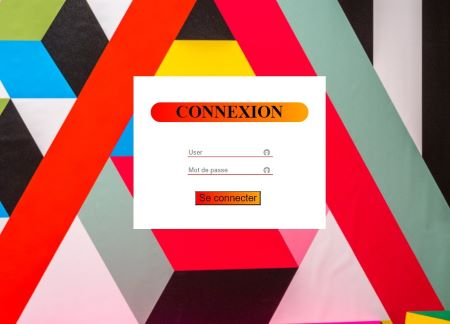

2022-Fin 2022 : Réalisation d'une application direction/sous direction permettant d'afficher les stats d'un escape game en C# et Wpf
2021-2022 : Réalisation d'un site vitrine pour un escape game lors d'un projet scolaire en html, css et php
Télécharger la fiche utilisateur

2021 : Réalisation d'un jeu du pendu en C#/WPF
2021 : Réalisation d'un site permettant de réserver des places en lignes pour aller voir l'exposition Gustave Courbet en html, css et php
2020 : Réalisation d'un site internet lors d'un projet scolaire sur Gustave Courbet en html, css et javascript
2019-2020 : Réalisation d'un projet pour le baccalauréat sur des ski-roues pour personnes à mobilité réduite